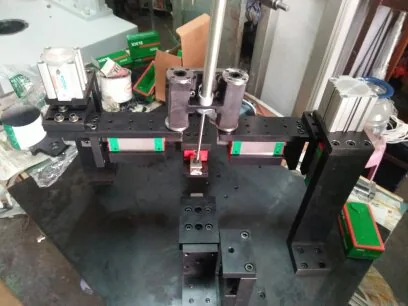
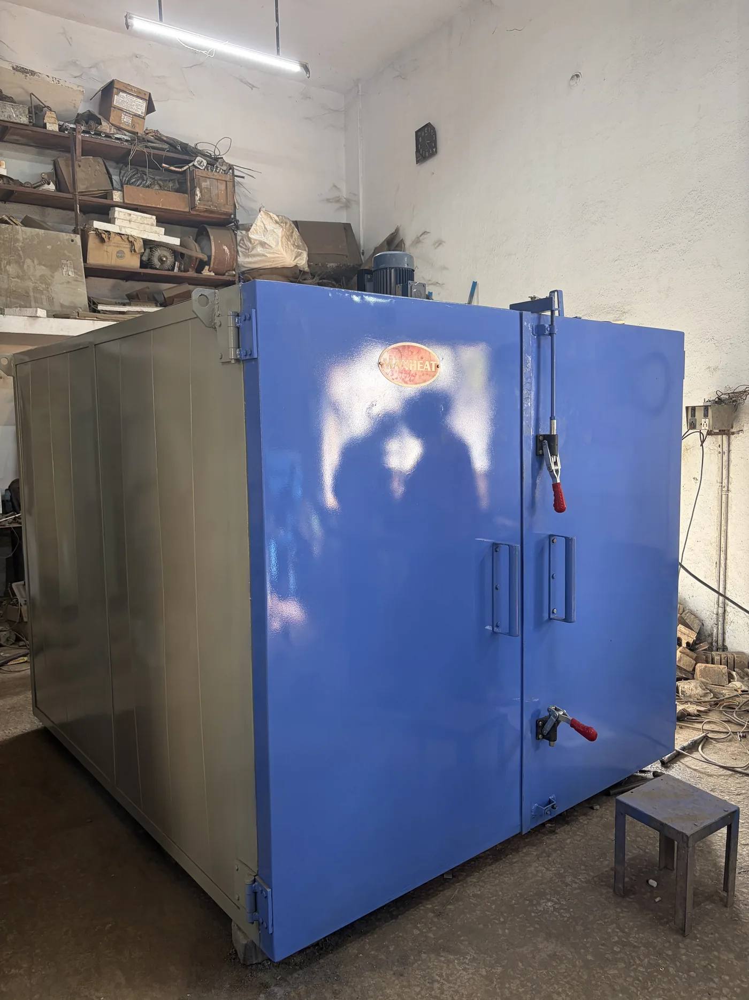

4-Servo Seal Slotting
This full-screen view is deliberately image-first. In the final selected direction, each chosen project can carry application, scope, controls and measurable outcome data here.
A client-review concept where the machines take the entire stage. VSK’s SPM, retrofit and process work is experienced as a sequence of scenes rather than a normal corporate homepage.
Enter the machine wall ↓The panes cycle independently through VSK’s real machine archive. Hovering pauses a pane; keyboard arrows move through the active machine wall; opening a pane expands it into a full-screen project view.




Application study, machine architecture, hydraulics, pneumatics, controls, assembly and trials converge around the production requirement.
When the mechanical platform still has value, VSK combines machine restoration with electrical and CNC/PLC modernization rather than treating them as separate services.
Turning, machining, grinding, fixtures and process support are presented through the way components are actually produced—not as a separate brochure page.
Select a machine name rather than browsing cards. The stage changes behind the index and keeps the project image dominant.



Face-out alignment reference on a 1000 mm grinding-wheel unit.
Z-cut / punching project reference.
Metal-seal facing-machine project reference.
“Good service company”
“Special purpose machines effective price”
“Custom built machines, CNC retrofit solution services provider.”
Machine, component, operation, present problem, output target, tolerance, controller and plant location—the technical context matters more than filling a long marketing form.